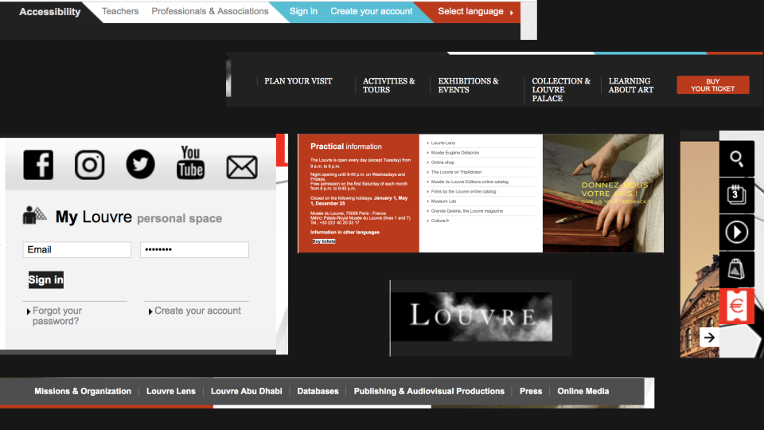
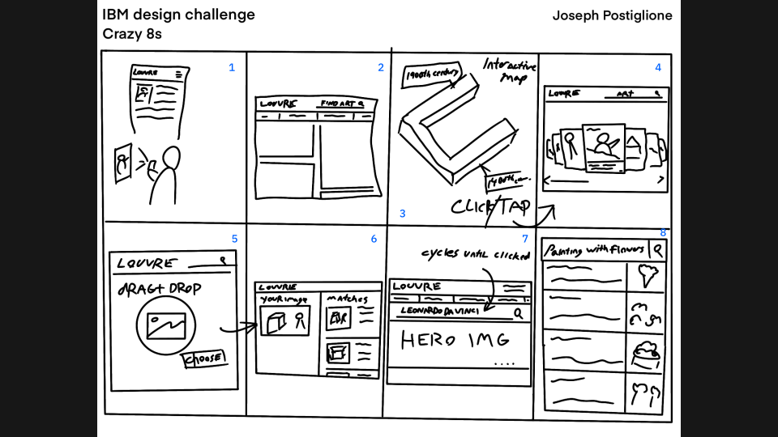
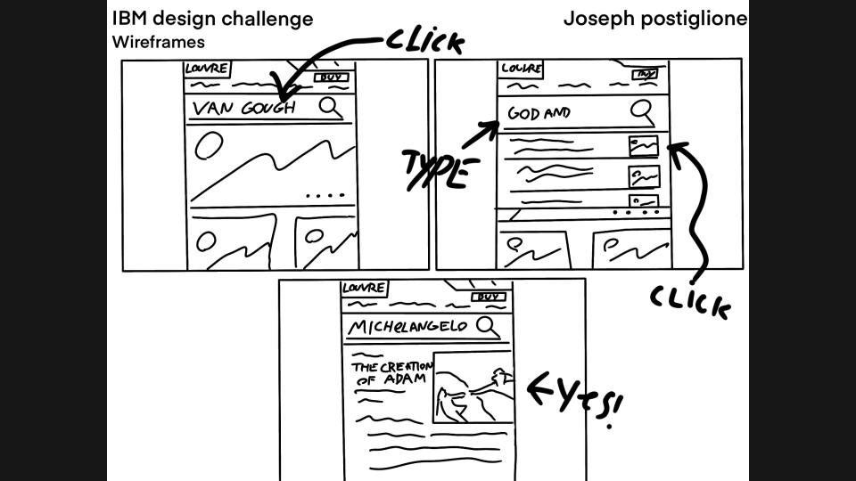

IBM Design Challenge
Redesign parts of a website for the world’s largest museum: The Louvre. Your co-worker, a user researcher, has analytics that show many users are looking for information on prominent pieces of art, but are leaving before they find what they want. Propose changes to address this feedback.
Research & Analysis:
After conducting a design audit of www.louvre.fr/en, I believe the issues users are experiencing may be exacerbated by the inconsistencies in design and the lack of familiar UI patterns. The search function should have clear entry points and serve as a gateway for new and returning visitors to find information on art easily and quickly.
Solving for X:
Since the Louvre website is a non-responsive site, I have decided to focus on using UI patterns that would be scalable for all platforms. This way a visitor may access information before, during, or after their trip.
Design Audit
Ideation
After completing a crazy 8’s exercise I have decided to converge on ideas 2, 7, and 8. I feel these would make for a welcome update to the search function while also improving upon the user experience and design of the current site. User photo-to-search function would be great for a mobile app though.
UI Flow
Creating a UI flow helps keep the user at the center of the design.
.svg)
Wireframes
By adding common UI patterns the user is immediately familiar with the search function. Any information they need on a piece of artwork at the louvre can be found quickly and accurately.
High-Fidelity Comps
Since conducting user testing was not an option for this design challenge I moved directly to high-fidelity comps.
.svg)
.svg)
.svg)
.svg)